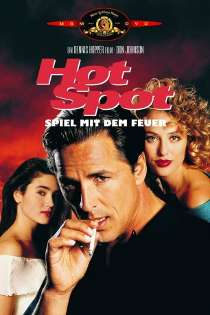

#11272 The Hot Spot - Spiel mit dem Feuer
Alternativ: The Hot Spot (Englischer Titel)
 
 IMDB-Wertung: 6.4 / 10
IMDB-Wertung: 6.4 / 10  Metascore: 56
Metascore: 56 
Harry Madox nimmt in der gottverlassenen texanischen Kleinstadt Landers einen zweitklassigen Job als Autoverkäufer an. Insgeheim trifft er Vorkehrungen für einen Überfall auf die örtliche Bank. Auch Dolly, die durchtriebene Gattin seines Chefs, schmiedet Pläne. Harry soll ihren herzkranken Gatten umbringen und dessen Platz einnehmen. Doch davon will Harry nichts wissen, denn er hat sich in die liebenswürdige Sekretärin Gloria verliebt. Als ihm klar wird, dass Dolly immer bekommt, was sie will, ist es zu spät...
Jahr: 1990
Dauer: 129 Minuten
FSK: 16
Land: USA Studio: Orion PicturesTonspuren:
Untertitel: Deutsch, Englisch,
Auflösung: 1080p (1920x1040) Größe: 8396 MB
Genre: Thriller, Drama, Krimi, Liebe
Regisseur:  Dennis Hopper
Dennis Hopper
Drehbuch: Charles Williams, Nona Tyson, Charles Williams
Soundtrack: Jack Nitzsche
Darsteller:
Datei: X:\1990\Hot Spot - Spiel mit dem Feuer, The (1990, FSK16, 1920x1040).mkv seit 08.06.2019
Festplatte: Gemischt-01+Anime
 Es gibt insgesamt 52 Filme in der Gruppe '1990'
Es gibt insgesamt 52 Filme in der Gruppe '1990'